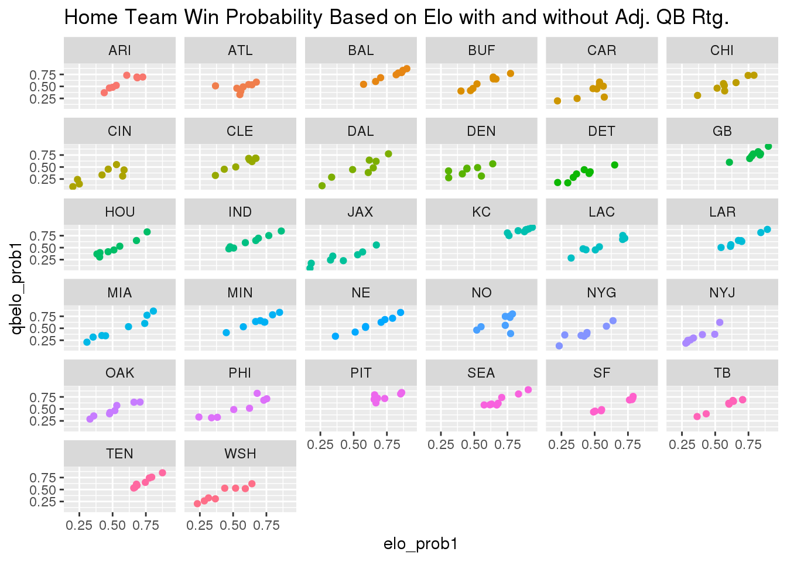

library(tidyverse)
dat_nfl <- read_csv("nfl_elo_latest.csv")Data
The NFL Elo dataset contains 256 observations of 30 variables. The data was collected by downloading nfl_elo_latest.csv from the FiveThirtyEight Github page. Altogether, the data comprised in this file details the game-by-game Elo ratings and forecasts for the latest NFL regular season up until Jan 3, 2021. There are many factors that go into these predictive metrics, however the more important ones refer to the QB play on a given team. A few questions that I’m going to answer with the data are as follows: is there a significant gap in a team’s win probability when including the adjusted QB rating? Which teams have the biggest differential in this split? Additionally, has there been a steady increase of points scored throughout the regular season? If so, what might be the reasoning behind that? All these questions should help us to understand the true value of the QB in today’s NFL as well as where the game is headed as far as scoring is concerned.
Question 1:
Is there a significant gap in a team’s win probability with the inclusion of adjusted QB rating? To test this question, we visualize the data in the form of scatterplots where each team is assigned their own graph. To avoid redundancy, I will only focus on the home team for every game. The reason being home and away splits this season don’t vary as much due to fans not being in attendance for most games.
library(tidyverse)
elo_variables_1 <- c("team1", "elo_prob1", "qbelo_prob1")
win_prob_team_1 <- dat_nfl[elo_variables_1] %>% na.omit()
home_team_plot <- ggplot(data = win_prob_team_1, aes(x = elo_prob1, y = qbelo_prob1, color = team1)) + geom_point() + facet_wrap(~ team1) + ggtitle("Home Team Win Probability Based on Elo with and without Adj. QB Rtg.") + theme(legend.position = "none")
home_team_plot
The data visualizations above seek to establish a correlation between a team’s win probability based solely on elo ratings and a team’s win probability based on elo ratings adjusted for the QB. Across the board, a positive relationship exists among these two variables. Furthermore, this indicates that if a team is starting a competent QB on a weekly basis, a majority of the dots on their respective graph will sit in the mid to upper-right quartile. We notice, however, that some data points for teams do not fall in this range. For example, see JAX and WSH. Both teams have undergone drastic changes at the QB position throughout the year. Whether it’s been due to poor QB play or injuries piling up at the position, it’s been tough sledding for either team on the offensive side of the ball. That leads us into our analysis for the following question.
Question 2:
Next, we will perform some calculations on summary statistics from this data to determine which teams in the NFL have the greatest and least disparity in win probability when adjusted for QB rating.
avg_elo_diff <- win_prob_team_1 %>% mutate(elo_diff = elo_prob1 - qbelo_prob1) %>% group_by(team1) %>% summarize(largest_mean_elo_prob_diff = mean(elo_diff))
avg_elo_diff %>% filter(largest_mean_elo_prob_diff > 0.08)## # A tibble: 5 x 2
## team1 largest_mean_elo_prob_diff
## <chr> <dbl>
## 1 ATL 0.0824
## 2 CIN 0.0870
## 3 DAL 0.0805
## 4 JAX 0.107
## 5 NO 0.0829med_elo_diff <- win_prob_team_1 %>% mutate(elo_diff = elo_prob1 - qbelo_prob1) %>% group_by(team1) %>% summarize(largest_median_elo_prob_diff = median(elo_diff))
med_elo_diff %>% filter(largest_median_elo_prob_diff > 0.07)## # A tibble: 5 x 2
## team1 largest_median_elo_prob_diff
## <chr> <dbl>
## 1 ATL 0.0855
## 2 CIN 0.0944
## 3 JAX 0.109
## 4 MIA 0.0783
## 5 TEN 0.0823std_elo_diff <- win_prob_team_1 %>% mutate(elo_diff = elo_prob1 - qbelo_prob1) %>% group_by(team1) %>% summarize(largest_sd_elo_prob_diff = sd(elo_diff))
std_elo_diff %>% filter(largest_sd_elo_prob_diff > 0.09)## # A tibble: 5 x 2
## team1 largest_sd_elo_prob_diff
## <chr> <dbl>
## 1 ATL 0.105
## 2 CAR 0.105
## 3 CIN 0.0936
## 4 DEN 0.102
## 5 NO 0.135After calculating the mean, median, and standard deviations of win probability differential for all 32 teams, the 5 teams with the biggest margins were filtered out in each category. The Atlanta Falcons and Cincinnati Bengals appear in the top 5 in all three statistical categories, likely meaning their starting QB (Matt Ryan and Joe Burrow) has hurt their chances of winning a game this season more often than not. Now to be fair to the Bengals, Joe Burrow was injured a few weeks back and they’ve been playing with backups for the remainder of the season. That would obviously have something to do with their name coming up on multiple occasions. The biggest surprise in these top 5 breakdowns, though, is the New Orleans Saints. With a record of 10-2, they are a high caliber team in the NFL. Yet when looking at their QB situation throughout the season, it has been a bit unexpected. The Saints lost their original starting QB in Drew Brees, a future Hall-of-Famer, and replaced him with a guy who has not played necessarily worse than him but who is more volatile on a week to week basis. That may explain why the Saints are at the top of the list in average win probabibilty differential and in standard deviation of win probability differential.
Now, let’s breakdown the 5 teams with the smallest margins in each category.
avg_elo_diff <- win_prob_team_1 %>% mutate(elo_diff = elo_prob1 - qbelo_prob1) %>% group_by(team1) %>% summarize(smallest_mean_elo_prob_diff = mean(elo_diff))
avg_elo_diff %>% filter(smallest_mean_elo_prob_diff < 0.001)## # A tibble: 5 x 2
## team1 smallest_mean_elo_prob_diff
## <chr> <dbl>
## 1 ARI 0.000230
## 2 BUF 0.000923
## 3 CLE -0.00591
## 4 IND -0.000351
## 5 PIT -0.0213med_elo_diff <- win_prob_team_1 %>% mutate(elo_diff = elo_prob1 - qbelo_prob1) %>% group_by(team1) %>% summarize(smallest_median_elo_prob_diff = median(elo_diff))
med_elo_diff %>% filter(smallest_median_elo_prob_diff < 0.009)## # A tibble: 5 x 2
## team1 smallest_median_elo_prob_diff
## <chr> <dbl>
## 1 ARI 0.00782
## 2 BUF 0.000119
## 3 CLE -0.0133
## 4 IND 0.00270
## 5 PIT -0.0131std_elo_diff <- win_prob_team_1 %>% mutate(elo_diff = elo_prob1 - qbelo_prob1) %>% group_by(team1) %>% summarize(smallest_sd_elo_prob_diff = sd(elo_diff))
std_elo_diff %>% filter(smallest_sd_elo_prob_diff < 0.0256)## # A tibble: 5 x 2
## team1 smallest_sd_elo_prob_diff
## <chr> <dbl>
## 1 BAL 0.0213
## 2 IND 0.0205
## 3 LAR 0.0254
## 4 NE 0.0253
## 5 SF 0.0198If you’ve been keeping up with the back half of the 2020 NFL season, you’ll notice that each team appearing in the top 5 for both the smallest average win probability differential and smallest median win probability differential are all in playoff contention or at least in the hunt. Through recent weeks, it can be argued that no QB has been more efficient than the Buffalo Bills’ Josh Allen or Cleveland Browns’ Baker Mayfield. Their level of consistency at the position has been mightily helpful in aiding their team’s chances of winning. This is reflected in their top 5 ranking here. However, the top 5 teams listed under the smallest standard deviation of win probability differential tell a different story. Guys like Philip Rivers, Jared Goff, and Cam Newton (IND, LAR, & NE) aren’t going to necessarily lose you the game but typically haven’t been the reason why their teams have won. In other words, these QBs have been the definition of mediocre this season. There might be a game here or there where that particular QB pops but ultimately will revert back to the mean the following week.
Question 3:
How has the number of points scored varied by team during the 2020 NFL season? Does playing on the road make a difference in this case? To investigate this, we will generate boxplots of the points scored for both the home and away team on a per game basis during the regular season. We’ll also calculate average points per game for each team (home and away) to see if home field advantage is more or less of an effect this year compared to previous ones. From there, our goal will be to identify any trends or scoring patterns from the data in order to make further assumptions.
pts_variables <- c("score1", "score2", "team1", "team2")
pts <- dat_nfl[pts_variables] %>% na.omit()
ggplot(data = pts, aes(x = team1, y = score1, fill = team1)) + geom_boxplot() + ggtitle("Home Team Points Scored During the 2020 NFL Regular Season") + theme(legend.position = "none") + theme(axis.text.x = element_text(angle = 90, hjust = 0.5))
ggplot(data = pts, aes(x = team2, y = score2, fill = team2)) + geom_boxplot() + ggtitle("Away Team Points Scored During the 2020 NFL Regular Season") + theme(legend.position = "none") + theme(axis.text.x = element_text(angle = 90, hjust = 0.5))When looking at the box plots above, we see more fluctuation with points scored by the home team on a per game basis. This is an interesting phenomenon as it would seem players are more comfortable playing in their home stadium environments. What’s even more of a shock is the more balanced scoring across the league when teams were away. Here, the median scoring of the away teams hover around the 25 point mark whereas the home team medians are more volatile from team to team. Is home field advantage non-existent in 2020? Perhaps, but player travel has also been a lot different this year with COVID protocols in place and that might also explain the wide range of outcomes.
Conclusion
TBD